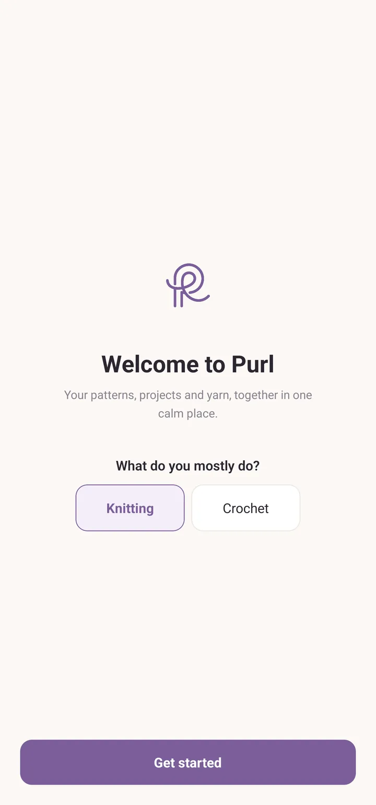
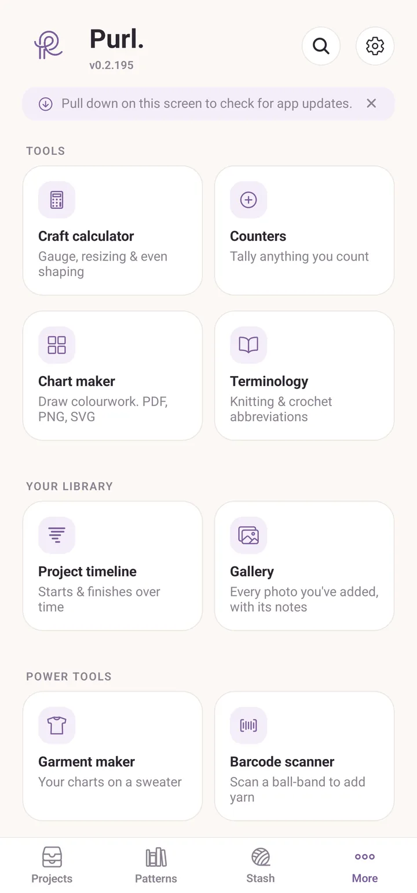
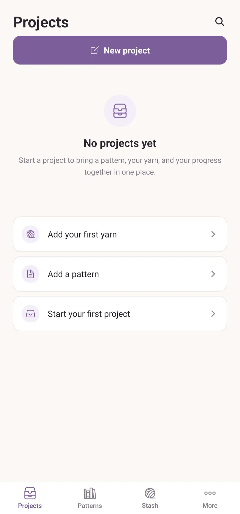
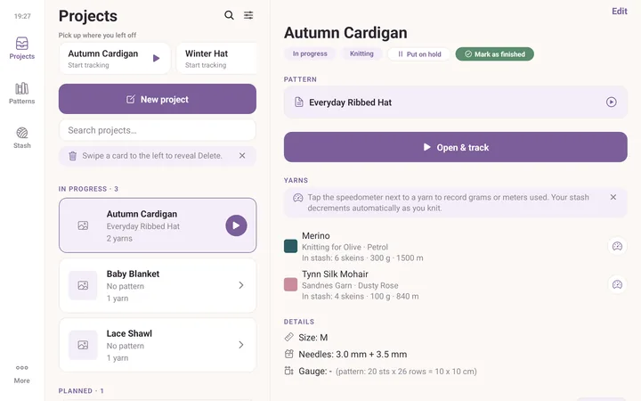

Getting started
Purl is a quiet, ad-free app for knitting and crochet. Patterns, projects, yarn, kept in one place, on your device, no account needed. Designed to work offline (on couches, planes, cabins with no signal) and to stay calm out of your way while you craft.
Install
On iPhone and iPad, Purl is on the App Store. Search for Purl., with the full stop, or follow the link from purl.no.
On Android, Purl is still in closed testing. You need an invite before the Play listing is visible to you. Some testers instead run a file they install by hand; Android may ask you to allow installing apps from outside the Play Store the first time.
The first thing Purl asks
On a fresh install you get one screen, Welcome to Purl, and one question: What do you mostly do? Choose Knitting or Crochet, then tap Get started.
That answer is not a lock. It only decides which set of terms new patterns and new projects start in, so a crocheter is not handed knitting language on every new screen. You can change it later in Settings under Default craft, and any single pattern or project can be the other craft.

The four tabs
Across the bottom of the screen:
- Projects: things you are making, planning to make, or have finished. Each project ties together a pattern, yarn, your progress and your photos.
- Patterns: your library of written patterns and imported PDFs.
- Stash: your yarn and your equipment (needles, hooks and other tools).
- More: everything else, in five sections.
What is in More:
- Tools: Craft calculator, Counters, Chart maker, Terminology.
- Your library: Project timeline, Gallery.
- Power tools: Barcode scanner.
- Your data: Backups & history, Export & import.
- About: User guide, What's new, What's planned, Send feedback, Support Purl. On iPhone and iPad there is also Rate Purl.
Settings is not in that list. It is the gear at the top of the More screen, next to the search icon. Search is there too, and it searches everything at once.

Your first few minutes
The Projects tab shows a card with three steps until you have done all three. Each step is a tap, and each step disappears once it is done.
- Tap Add your first yarn. Purl jumps to the Stash tab. Tap Add and fill in a brand, a name, a colour and how many skeins. Inside that form, next to Pick from library, there is a small barcode button. Tap it if you would rather hold the ball band up to the camera than type.
- Tap Add a pattern. Purl jumps to the Patterns tab. Create writes one from scratch, which needs no file at all and is the quickest way to see how the reader works. Import brings in a PDF you already have.
- Tap Start your first project, which opens the project editor. Give it a name, choose the pattern, add the yarn, and save.
Once you have done that loop once, everything else is a variation on it. The rest of this guide goes through each tab in depth, and Your first project shows the quicker way, where Purl makes the project for you the moment you open a pattern.

Three things to know up front
- Your data is local. Purl doesn't have a cloud account. Nothing gets uploaded anywhere. The trade-off: backups are your responsibility, but the app makes them easy (see backups).
- Mistakes are recoverable. Anything you delete goes to More > Backups & history and stays there for 30 days. Purl also takes a small daily snapshot of everything, kept for the last seven days, so you can roll back an edit you did not mean to make.
- The Norwegian and English versions are both first-class. Open Settings from the gear on the More screen and set Language to Norwegian, English, or System to follow your phone. The glossary is bilingual and lets you browse one language while the app is in the other.
Making it comfortable to knit next to
All of these live in Settings, behind the gear on the More screen.
Under Display:
- Appearance: System, Light or Dark. Dark is easier on the eyes in an evening chair. System follows whatever your phone or tablet is already set to.
- UI scale: Compact, Default or Large. This multiplies every text size in the app. Large is worth trying if you read patterns at arm's length.
Under Defaults:
- Keep screen awake: the screen stays on while a pattern is open, so it doesn't go dark mid-row. It is On to begin with, and it only applies while you are actually reading a pattern, so it will not flatten your battery the rest of the time.
On an iPad, and sideways on a phone
Give Purl a wide enough window and it rearranges itself. The four tabs move from the bottom edge to a rail down the left side, with a small clock at the top, and the screen splits into two panes: the list on the left, whatever you select on the right. Tap a project and it opens beside the list instead of replacing it. The same happens in iPad Split View and Stage Manager, and it collapses back to one pane if you make the window narrow again.
An iPad is wide enough in both orientations, so you get this all the time. A phone is not, unless you turn it sideways. Phones stay locked to portrait by default. To unlock them, open Settings and set Layout to Allow rotation. On a big phone, turning it sideways then gives you the same two-pane layout an iPad gets.

When something doesn't work right
Purl is in active development. If something feels off (a button doesn't do what you expected, the app crashes, a feature is hard to find) open More > Send feedback. The screen is called Notes to developers. Pick a category, write what happened, and tap Save note. The note is kept on this device under Your notes, so you can write it mid-row and deal with it later.
When you are ready, tap Send on the note. That opens a short form in your browser with your note, its category and your app version already filled in, so all you have to do is submit it. It's anonymous, and every report is read.